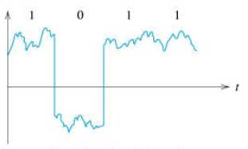
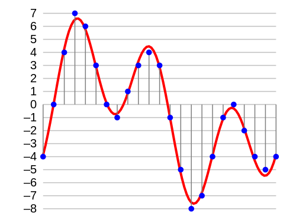

Electronic Signal

More than two values
-
Binary 0 and 1 only. How do we get more values?
-
How do humans write the value for one million? Do we have a special symbol for it?
-
We can do the same with our binary symbols:
-
What is 19 in binary?
Fractional values
- Combining bits together gets us the natural numbers.
- How do we get fractional values?
- Again, how do humans write the value for five ninths?
-
We can do the same with our binary values and store a
numerator and denominator:
Characters as numbers
- What about non-numeric items?
- How can we store letters?
- Assign a number to each letter. For example:
A = 0, B = 1, C = 2, ..., Y = 24, Z = 25 - How many bits do we need for each letter?
- To communicate, both sides need same letter assignment.

Text as numbers
- How do we store words? For example,
fun. - Can't ask for a generic human solution; there are many
- How did the Chinese solve this problem?
- Computer equivalent: Unicode with >128,000 characters.
- How did the English solve this problem?
- Computer equivalent: array of characters.
- Bonus: How do we keep track of where the word ends?
Images as numbers
- How do we store pictures?
Images as numbers
- What if it is black and white?

Audio as numbers
- What about sound?
- Discretize continuous analog sound by sampling at regular intervals.
- Sample frequently enough, ears can't tell the difference from a continuous signal
- Use enough discrete values, ears can't distinguish among them.
Audio as numbers

Video as numbers
- What about video?
- Already have images and audio
- Combine multiple images (array?)
- Display at specific times
- Synchronize with audio
Everything can be a number!
- Equations as numbers: Mathematica
- Odors as numbers: Smell-o-vision
- Money as numbers: Bitcoin
- What else can be represented as a number?
Ideas from CS:APP
Hexadecimal notation
Trying to keep track of a bunch of bits is hard. For example, write down this value quickly:
1011 0101 0010 1101 0001 1010 1100 1010
Use hexadecimal to group bits:
1011 0101 0010 1101 0001 1010 1100 1010
B 5 2 D 1 A C A
Hex conversion
How to convert binary to hexadecimal?
- Break binary into 4-bit segments (right-to-left!)
- Transform each segment separately.
In C, a hex value is prefixed by 0x; above value would be
0xB52D1ACA
Fixed data sizes
- We need to know when a value starts and stops.
- The computer uses fixed data sizes.
- 32-bit computer most efficient on 32-bit (4-byte) values
- 64-bit computer most efficient on 64-bit (8-byte) values
Fixed data sizes
- C doesn't specify mapping between types and sizes.
- For example, an
intis:
| Machine | Bytes |
|---|---|
| Modern Laptop/desktop | 4 |
| Old VAX | 2 |
| Old Cray | 8 |
Byte ordering
Data larger than one byte: what order in RAM?
- Big endian
- Most significant byte (MSB) at lowest address
- Most "natural" way (matches how we write binary)
- Little endian
- MSB at highest address
- Intel x86 - Important for labs!
Endian example
For base address addr
| Ordering | addr+0 |
+1 |
+2 |
+3 |
|---|---|---|---|---|
| Little endian | 0x78 |
0x56 |
0x34 |
0x12 |
| Big endian | 0x12 |
0x34 |
0x56 |
0x78 |
Bitwise operators
C has six operators that deal with individual bits
| Name | Example | Result |
|---|---|---|
| Bitwise AND | 0011 & 1010 |
0010 |
| Bitwise OR | 0011 | 1010 |
1011 |
| Bitwise XOR | 0011 ^ 1010 |
1001 |
| Left shift | 1010 0011 << 3 |
0001 1000 |
| Right shift | 1010 0011 >> 3 |
0001 0100 |
| Bitwise complement | ~ 1010 0011 |
0101 1100 |